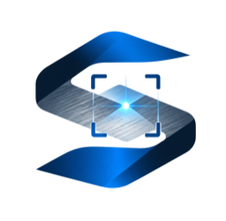
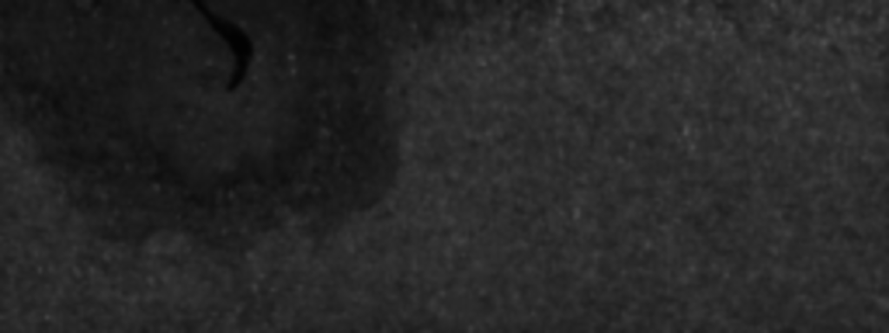
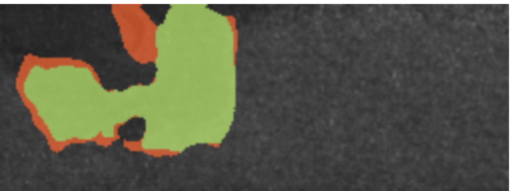
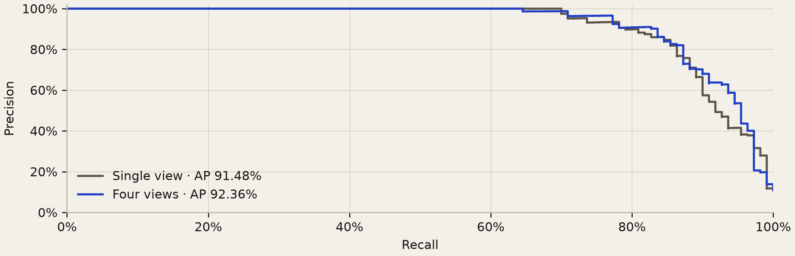
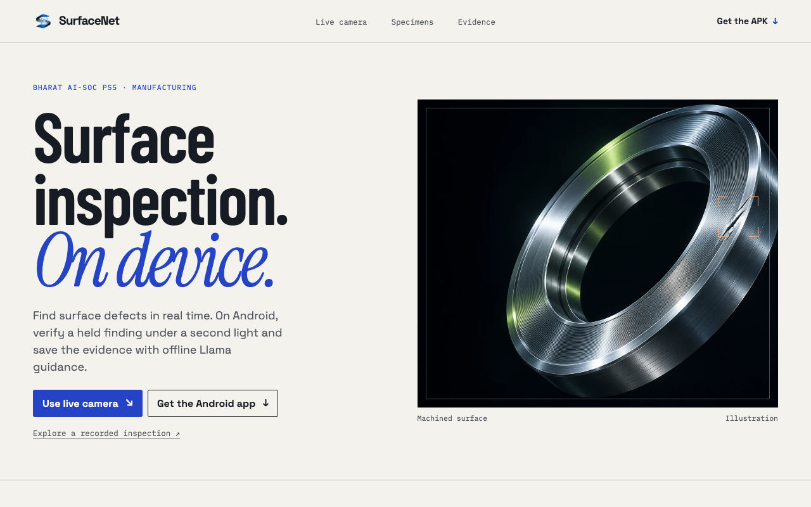
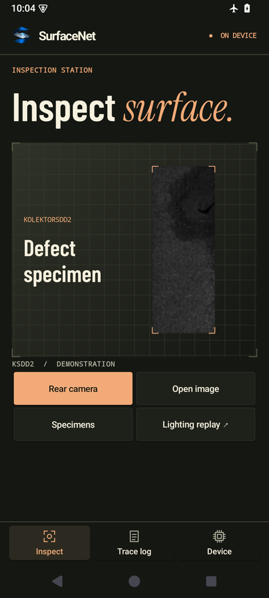
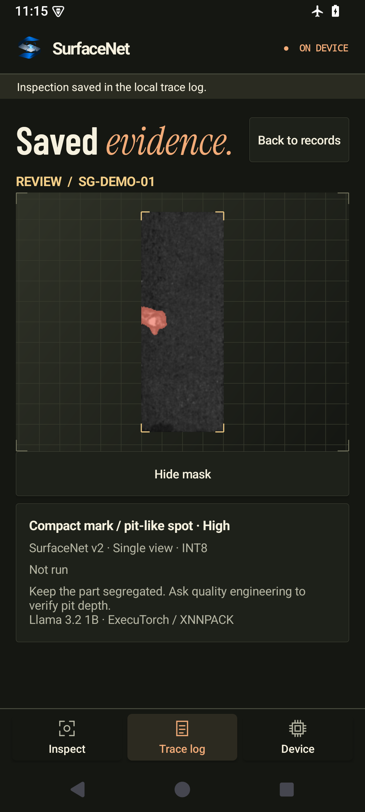
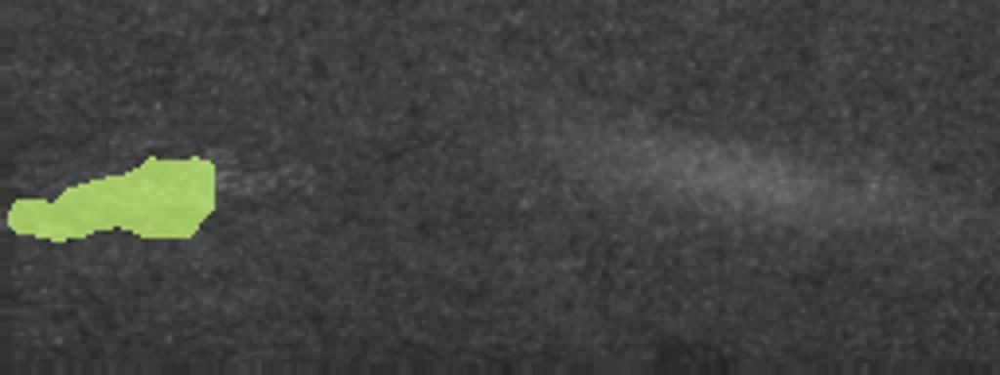

PS5 · Manufacturing & Industry 4.0
Technical and Venture Report
SurfaceNet
Real-time industrial defect detection
and quality control

Original surface image

Aligned simulated relight
SupportedUnsupported
25 November 2026
Abstract and key results.
SurfaceNet is an Arm Android prototype for industrial surface inspection at a fixed fixture. Its principal contribution is an operator-triggered optical verification loop. When a region is held, the phone changes illumination, registers the new capture and checks whether the localized pixels agree. The vision program and Llama 3.2 1B run through ExecuTorch. The advisory selects a permitted procedure from frozen evidence, and the local record preserves the decision, captures, masks and advisory provenance. [1,7–9,17]
On 1,004 held-out KolektorSDD2 images, the 159 KiB four-view INT8 program achieved 97.45% image AUROC and 92.36% image average precision. Both calibrated profiles referred 105 of 110 defective images to alert or review. Four views reduced clean referrals from 165 to 130, a 21.2% relative reduction. The Arm64 Android emulator verified local advisory and trace retrieval. Physical handset throughput and torch repeatability remain prospective endpoints. [2,3]
Image AUROC, four-view INT8
Defective images routed to alert or review
Clean-image referrals with four views
PRODUCT THESIS
An auditable inspection loop.
A single station combines localized evidence, a repeatable verification procedure and a saved decision that the operator can reopen offline.
Report index
- Problem & current solutions03
- MVP & contribution04
- System architecture05
- Research methodology06
- Hardware utilization & optimization07
- Operator & lighting workflows08
- Results & trade-offs09
- Product evidence & jury demo10
- Cost & economics11
- Marketing methodology12
- Engineering challenges & limits13
- Physical study & roadmap14
- References & reproducibility15
Problem and related work.
The first deployment is a supervised inspection bench for a repeatable machined-part family in a small or mid-sized manufacturing shop.
Operator job
Decide whether a visible mark merits a hold, record where it appeared, and leave enough evidence for another person to resolve it.
Buyer job
Find missed defects and excessive review effort on one part family. Validate the station against the current process before expanding.
| Current approach | What it offers | Role in a comparison |
|---|---|---|
| Manual visual inspection | Immediate operator judgment, flexible handling and use of established SOPs. | Primary pilot baseline. Measure inspection time, disagreements and record completeness. |
| Rule-based vision | Explicit position, edge and size checks under controlled geometry and lighting. | Strong baseline for a constrained fixture. Compare where texture and glare create ambiguous marks. |
| KEYENCE IV3 [12] | Dedicated vision sensor with built-in AI, automated setup features and illumination options. | Instrument-grade comparison for a future station procurement decision. Obtain a station quote and test the same part. |
| Cognex In-Sight D900 [11] | Dedicated deep-learning smart-camera platform for industrial inspection. | Compare integration, optics, support and actual costs through a matched trial. |
| LandingLens [13] | Visual model workflow with cloud and edge deployment options described by the vendor. | Compare dataset setup effort, deployment requirements and the operator workflow. |
| EfficientAD / Anomalib [4,6] | Research approach and implementation for efficient anomaly detection from nominal examples. | Architecture baseline for a future matched evaluation by split, resolution and hardware. |
Supplier rows summarize published features. EfficientAD establishes a compact anomaly detection baseline, while PNI shows why nominal appearance can depend on spatial context. SurfaceNet uses a registered clean reference at the fixture. MVTec AD 2 motivates a separate illumination-shift study. Formal comparisons require matched images, decision rules and hardware. [4–6,19]
Initial scope
Use a fixed phone mount, a single part family, a defined region of interest, and a trained operator. The MVP supports spot checks and supervised bench work. Production integration, automatic rejects and safety-critical release certification require separate validation.
Active optical verification.
The system tests a candidate defect by varying illumination while holding the nominal part pose fixed. The aligned spatial evidence informs the operator procedure.
One location, two exposures
For a held region, the phone can fire its rear torch. The check requires adequate lighting change and alignment, then demands bidirectional mask support.
Review is a decision
Separate clear and alert cutoffs create a review band. Spatial consistency, fixture enrollment, and image quality protect the live disposition.
Evidence governs advice
Llama receives structured observations after capture freezes. It chooses an allowed procedure, and the record keeps the advisory source.
| PS5 requirement | Shipped MVP | Evidence boundary |
|---|---|---|
| Detect surface defects, cracks and anomalies | Pixel masks for learned defects. Clean-reference residuals for unfamiliar changes. | Dataset detection is measured. Unfamiliar defects on physical parts need independent tests. |
| Classify type and severity | Line-like, compact and diffuse morphology. Ordinal geometric severity proxy. | Crack-like shape is an observation. Physical crack confirmation and tolerances require metrology. |
| Alert and recommend action | Hold, review and reacquire states. Llama 3.2 1B advisory through ExecuTorch. | Offline advisory and trace were exercised on an Arm64 emulator. |
| Log inspection outcomes | Part ID, image crop, mask, decision and advisory provenance in a local trace. CSV export. | SQLite record and reopen flow verified. Plant system integration is future work. |
| Real-time on-device operation | CameraX and INT8 vision on the Arm CPU. Timing export from the live app. | Host forward timing and emulator pipeline timing are available. Physical cycle time remains to be measured. |
System contribution
SurfaceNet implements controlled recapture, bidirectional mask agreement, selective disposition and constrained offline advice as one phone-based procedure. The second exposure tests spatial persistence. An inconclusive check retains the hold for review. The controlled perturbation study isolates the mask-agreement rule, while the planned fixture trial tests the physical torch.
On-device architecture.
CameraX rear camera
Rotation-corrected, 96 × 256 luminance crop. Latest-frame scheduling.
INT8 vision
SurfaceNet v2 in ExecuTorch/XNNPACK. Single view or four reflected views.
Evidence gate
Quality, clean-reference alignment, repeat-frame logic and optional rear-light check.
Frozen finding
Scores, shape, severity proxy, disposition and lighting result.
Llama 3.2 1B
Separate 4-bit ExecuTorch model. Selects one of two allowed procedures with SOP fallback.
SQLite trace
Part ID, evidence, timing, runtime profile and advice provenance.
| Layer | Implementation and interfaces |
|---|---|
| Native capture | CameraX keeps the latest frame. Dedicated vision work turns an eligible frame into a decision. The configured 100 ms interval limits analysis request rate. |
| Surface and anomaly evidence | The learned segmenter produces a dense logit map. A parallel clean-reference branch uses eight enrolled frames, bounded translation and brightness-offset compensation for unfamiliar changes. |
| Operator state | Android reports finding morphology, score and mask. The live timing export includes profile, frame count, measured rate and percentile timings, with sensor timings only when comparable. |
| Storage and distribution | Signed Arm64 APK (~18 MiB) with separate imports for the pinned Llama PTE and tokenizer. Verify both files by SHA-256. SQLite evidence and CSV exports are local. |
| Browser companion | ONNX Runtime Web in a worker. Live single-view FP32 detection, repeat-frame review, browser-rule guidance, freeze, part ID and JSON evidence export. Recorded specimens support both profiles. [18] |
The iQOO Z9s Pro 5G is the documented target hardware. The published specifications list Snapdragon 7 Gen 3. Record the handset variant and software build in the field-test ledger. [10]
Proposed Raspberry Pi 5 port
Use 64-bit Raspberry Pi OS, Picamera2 and a switchable external light in place of CameraX and the phone torch. Run the INT8 segmenter and Llama advisory as separate ExecuTorch/XNNPACK programs on the Arm CPU. Qualify camera registration, model output parity, peak RAM and sustained latency before deployment. [22,23]
Training and calibration.
Use disjoint training, validation and test partitions. Select checkpoints and decision thresholds on validation, then score the fixed profiles on the official test split.
Train · 1,865
197 defective images. Learn mask features and image-level context.
Validate · 466
49 defective images. Select checkpoint, profile and operating thresholds.
Test · 1,004
110 defective and 894 clean. Report image, pixel and workload metrics.
Split the official training partition by defect label using seed 184 and reserve approximately 20% of each class for validation. Freeze the checkpoint and decision cutoffs before scoring the official test split. Use the same test annotations for both vision profiles. [2,3]
| Design decision | Method |
|---|---|
| Compact vision model | 124,455 parameters. Multi-resolution decoder, input skip and image-level recognition head. Train with weighted sampling, batch size 24 and AdamW (0.002 cosine-decayed to 0.0003). Combine focal BCE, Dice, image classification and hard background mining with photometric and specular augmentation. Validation image AP selected epoch 29 of 40. |
| Edge export | Static per-channel INT8 post-training quantization uses 384 calibration images from the training partition. Compare numerical behavior and validation performance before deployment. [21] |
| Four-view inference | Reflect the crop across two image axes and their combination, batch the four transforms with shared weights, invert the transforms, and average the logits. Validation compared context weights 0 and 0.25. The 0.25 profile met the release criteria. |
| Operating thresholds | Alert cutoff from the 98th percentile of validation-negative scores. Clear cutoff from the second-lowest of 49 validation-defective scores (α = 0.05 lower-tail rank). The interval maps to manual review, a selective decision analogous to an abstention region. The rank cutoff was chosen empirically and requires fixture-specific field validation. [20] |
| Metrics and timing | Image AUROC and average precision assess ranking. Approximate pixel AP combines 2,048 score bins at the resized resolution. Report alerts, clean referrals and defect escapes at the chosen cutoffs. Host p95 uses 120 warmed forward calls per profile. |
Single-view INT8
Clear < 0.04878 · Alert > 0.45331
Default profile. Smaller program and lower host latency.
Four-view INT8
Clear < 0.01313 · Alert > 0.22314
Alternative profile. Per-image workload improved with the calibrated band.
The paired-light ablation applied deterministic exposure gain, luminance offset and translation of up to two pixels. Every third alternate added a synthetic highlight. The ablation changes the mask-agreement rule while keeping the vision profile and alert cutoff fixed. [5]
Hardware and optimization.
The Android prototype schedules compact vision on the Arm CPU during inspection and invokes Llama after the operator freezes the finding.
| Resource | Allocation and optimization |
|---|---|
| Rear camera and torch | CameraX keeps the latest frame and admits one analysis request per 100 ms at most. Preprocessing samples a rotation-corrected 96 × 256 crop from the luminance plane. A flash-capable rear camera supplies the alternate illumination on demand. [8,9] |
| Arm CPU · vision | ExecuTorch 1.5.0 runs the calibrated INT8 segmenter. XNNPACK handles delegated kernels. Single view is the default. The optional four-view graph batches reflected inputs with shared weights and averages aligned predictions. [21,27] |
| Arm CPU · advisory | Llama 3.2 1B Instruct uses the pinned 4-bit SpinQuant export. The app releases the vision module before advice, limits the context to 256 tokens and stops on a valid choice or after 12 output callbacks. [7,17,26] |
| Memory and storage | Both loaders memory-map their model programs. The ~18 MiB APK bundles vision. The imported Llama program is ~1.14 GB and the tokenizer is ~2.2 MB. Inspection records stay in local SQLite. Model file sizes describe storage. |
Controlled quantization comparisons
| Vision profile | Program size, KiB | Warm p95, ms | Test image AP |
|---|---|---|---|
| Single view | 502.1 → 153.4 | 1.957 → 1.103 | 90.54% → 91.48% |
| Four views | 506.1 → 159.0 | 9.860 → 6.629 | 91.96% → 92.36% |
FP32 → INT8 within each profile. Single view used 69.5% less program storage and 43.6% lower host p95. Each comparison used 120 warmed forwards per variant. Source files are listed under reproducibility.
Measurement boundaries
Inference is CPU-only. The on-device benchmark exports the device and SoC IDs, thermal status before and after, and 120 raw timings per profile after 16 warmups. Live capture exports separate analyzer timing and throughput. Add process CPU load, peak proportional set size (PSS), power draw and thermal status during a sustained handset run. Time cold and warm Llama calls separately.
Inspection and disposition.
Enroll clean
Fix the part pose and lighting. Capture eight verified clean frames.
Inspect
Localize marks and compare recent frames. Show the mask and estimated severity.
Act and save
Freeze evidence, choose local advice, add the part ID and save to the trace.
Hold a candidate
Three spatially consistent findings in four live observations.
Change illumination
Fire the rear torch, wait for exposure settling, and capture alternates.
Register and compare
Check image quality, correlation, displacement and mask correspondence.
Persistent
At least 3 of 5 usable frames match. Preserve the hold and inspect the repeatable mark.
Unconfirmed
Weak overlap or a shifted mark stays held for operator review.
Inconclusive
Unusable exposure, registration or light change prompts reacquisition or manual review.
Registration gate
Search ±4 px. Require correlation ≥0.58, motion short of the search boundary, and a 75th-percentile luminance change of ≥7 levels.
Pixel evidence gate
Require box IoU ≥0.25 and at least 60% of each registered mask within one pixel of the other mask.
Severity and human disposition
Mask area fraction and elongation support an ordinal low, moderate or high estimate. Learned marks use area cutoffs of 0.2% and 1.2%. Elongation ≥4.5 also maps to high. Unknown marks remain unrated. The operator owns pass or hold under the station SOP. The advice source stays visible in the record.
Accuracy and review burden.

| Measure | Single view | Four views |
|---|---|---|
| Image AUROC / average precision | 97.29% / 91.48% | 97.45% / 92.36% |
| Pixel average precision | 73.45% | 69.16% |
| Defective images directly alerted (of 110) | 91 | 96 |
| Clean images directly alerted (of 894) | 13 | 24 |
| Defective images alerted or reviewed (of 110) | 105 | 105 |
| Clean images alerted or reviewed (of 894) | 165 (18.5%) | 130 (14.5%) |
| Apple M3 warm forward p95 / model size | 1.06 ms / 153.4 KiB | 6.63 ms / 159.0 KiB |
Selective screening at the tested operating points
Four views referred 35 fewer clean images at the same defect referral count (21.2% relative). They also produced 11 additional direct alerts on clean images and 4.29 percentage points lower pixel AP. Single view remains the live default because it had lower warm forward latency and higher pixel AP.
Quantization reduced the four-view program by 68.6%
In a same-profile FP32–INT8 comparison, the program shrank from 506.1 to 159.0 KiB and Apple M3 warm forward p95 decreased from 9.86 to 6.63 ms. Held-out image AP changed from 91.96% to 92.36%. See the hardware section for the corresponding single-view comparison. [21]
Five defective images fell below each profile’s clear cutoff in the score-only comparison. Each profile referred 95.5% of defects (approximate Wilson 95% interval 89.8–98.0%, treating images as independent). Equal counts can include different specimens. Live evidence checks and operator review are outside this image-level comparison. [2,3]
Offline prototype verification.

Android is the PS5 demonstration. Use the browser to explore the specimens and performance evidence on a second screen.


Analyzed fixture frames
Emulator decisions over 21.6 s
Analyzer-to-decision p95
The API 35 Arm64 emulator ran the release APK and single-view INT8 model from a fixture image supplied as its rear-camera input. Analyzer-to-decision excludes sensor acquisition, rendering and torch time. The run supplied no comparable sensor time. The offline advisory and saved record were exercised separately. [8,9]
Demonstration protocol
- Enroll a clean part and start live rear-camera inspection in airplane mode.
- Introduce a marked part. Show the hold and its localized evidence. Trigger the second-light check.
- Freeze, request local advice, save under a part ID and reopen the trace.
Deployment preparation
Install the signed APK on the demo phone and import the pinned Llama program and tokenizer before the session. Reserve about 2.5 GB during setup. The recorded specimen provides a repeatable fallback with explicit capture provenance. Verify browser access and camera permissions before the demonstration. [17]
Verified prototype behavior
On v0.7.4, the app reported 5.60 s for one offline advisory call. The saved record reopened with Llama provenance. The advisory and live CameraX timings come from separate emulator runs.
Cost of an inspection station.
Reuse an Android phone for the lowest-cost trial. A CPU-only Raspberry Pi 5 is the proposed lower-cost option when buying a dedicated station.
| Pi 5 bill of materials | Basis | Budget |
|---|---|---|
| Raspberry Pi 5 · 4 GB | CPU-only Arm64 board. [22,24] | ₹13,459 |
| Camera and ribbon cable | Camera Module 2 ₹1,748 + Standard–Mini cable ₹134. [22,24] | ₹1,882 |
| Power, cooling and storage | 27 W supply ₹1,345 + active cooler ₹531 + 64 GB microSD ₹534. [25] | ₹2,410 |
| Fixture and second light | Jig ₹600–2,000, light ₹1,290–2,200 and mounting/switching ₹400–700. Planning allowances. [15] | ₹2,290–4,900 |
| New Pi 5 bench total | ₹17,751 core parts plus fixture and light. Includes 15% contingency. | ₹23,047–26,049 |
Supplier snapshots checked 25 November 2026. Estimates reuse an operator display or local terminal and exclude shipping, labor and industrial integration. Reusing a Pi 5 board trims incremental Pi hardware to ₹7,569–10,571. Android fixtures include mount ₹1,200–2,400, light ₹1,290–2,200, jig ₹600–2,000, and power ₹400–800, plus 15% contingency. The new-phone scenario adds a ₹22,000–30,000 handset allowance. [14,15,24,25]
Pilot price hypothesis
Test ₹25k–60k for a one-station pilot. A ₹40k example includes hardware, setup and training with a reused phone. Optional ₹1.5k/month support gives ₹58k in year one before taxes and customer labor.
Illustrative payback
At 12,000 parts/month, six seconds saved per part and ₹300/hour recover ₹6,000/month in capacity. With ₹3,000/month in separately verified avoided losses and ₹1,500 support, simple payback is 5.3 months, or 8.9 months from time savings alone.
The offline pipeline has an estimated ₹0 variable cloud inference charge. Compare local operating costs and actual capacity savings in a shadow trial.
Customer discovery and pilot design.
Recruit plant quality leads for a measured trial on one inspection task. The pilot scorecard tests workflow performance and willingness to pay before expansion.
Find the costly hold
Interview quality leads and operators. Find one recurrent defect and a stable fixture.
Run in shadow mode
Record SurfaceNet and baseline decisions side by side. Keep the current release SOP active.
Prove value and expand
Share an approved scorecard and quote the next SKU or station after sign-off.
| Market decision | Method | Owner or measure |
|---|---|---|
| Who to approach | Precision machining and small metal-component makers with bench inspection, repeatable lots and recurring visible defects. | Quality manager champions. Plant or operations lead budgets. Operator validates workflow. |
| How to reach them | Use industrial-cluster outreach and local automation integrators. Lead with a short live demonstration and an anonymized example record. | Track qualified conversations and bench visits by channel. |
| What qualifies a site | One stable part family, sample access, defect labels that an operator can adjudicate, and a measurable inspection burden. | Get permission for evidence capture and agree on success thresholds. |
| What a pilot proves | Measure defect routing, clean referrals, review time, trace completeness and time to train an operator. | Quality and operations sign the scorecard. Use case material only with permission. |
| When to expand | Standardize jig, enrollment and acceptance protocol before quoting another family or plant. | Look for a funded second station and repeatable installation time. |
Discovery targets
Start with 15 interviews, screen five qualified benches, pursue two pilots and aim for one paid expansion. These are planning targets. Size the addressable market from verified eligible sites, stations per site and tested willingness to pay.
Engineering lessons and limitations.
| Challenge | Change shipped or tested | Residual risk |
|---|---|---|
| Glare and small pose shifts can mimic a mark. | Bounded registration, clean-reference enrollment, brightness compensation and quality checks. Second-light confirmation requires spatial agreement. | Curved specular parts, weak torch response and larger shifts can still trigger review. |
| A single cutoff forced borderline cases into clear or alert. | Calibrated review band and repeated live evidence before a terminal recommendation. | Additional holds consume time. Thresholds depend on the part family and calibrated fixture. |
| Paired-light fine-tuning lowered validation AP. | After 24 epochs, image AP fell from 91.40% to 89.83% and pixel AP from 73.30% to 72.95%. Validation recall moved from 39/49 to 40/49 at the same false-alert count. Retained the baseline weights. | Simulated gain, offsets, shifts and specular spots have limited physical realism. [5] |
| Local advisory initially hit fallback during testing. | Adjusted answer budgeting and execution coordination. Validated the output against allowed procedures and kept the deterministic fallback. | Setup is sizable. Device-specific response time, failure rate and thermal behavior need measurement. |
| Capture silence and mixed timing scopes made diagnosis difficult. | Added a first-frame watchdog and live telemetry export. Tagged replay, host forward and live analyzer timing separately. | Phone permissions, camera timing source and prolonged use remain field variables. |

Ablation under simulated lighting
For the four-view profile, adding bidirectional mask agreement to box overlap reduced confirmations on clean images from 14 to 11 of 24 clean alerts. Defect confirmations moved from 92 to 88 of 96 defect alerts. Unconfirmed observations remain held for review. Physical torch benefit remains open.
Current limitations include one public dataset for headline metrics, a single enrolled fixture at a time, morphological defect classes, and severity based on image geometry. The app requests camera access and keeps traces local. Set export and retention rules with each site. The bundled KSDD2 derivatives are for non-commercial challenge use under CC BY-NC-SA 4.0. Use rights-cleared data and review model distribution terms before commercial rollout. [3,17]
Physical validation roadmap.
Label the parts
60 clean and 60 defective unique parts. Quality staff label before exposure to app outputs.
Freeze the protocol
Lock profiles and light settings. Randomize part order and counterbalance the secondary condition.
Score terminal outcomes
Count missing records, report interval estimates and retain timing plus operator adjudication.
| Horizon | Build and validation work | Gate |
|---|---|---|
| Weeks 0–2 Handset readiness | Lock APK and asset hashes, calibrate mount and lighting, test in airplane mode, and run a 10-minute camera soak. Record Android build, thermal conditions and model timing. | Repeat the full demo on the physical phone and export a trace for each procedure. |
| Weeks 3–6 Shadow trial | Run the labeled study above and compare operator-only, single-view and second-light decisions. Score the primary light setting independently and report paired secondary results. | Exploratory targets ≥90% defect referral, ≤5% clean false hold, ≥6 decisions/s and analyzer p95 ≤150 ms. Report operator review time and uncertainty. |
| Weeks 7–10 PoC readiness | Use rights-cleared examples, add part recipes and approval controls, measure drift by lot and benchmark EfficientAD under a matched protocol. Define maintenance and rollback. | Quality sign-off and documented asset rights before a field rollout. Request another fixed fixture only after the first meets its acceptance criteria. |
Who owns a release
The site’s quality team owns disposition under its SOP. Hold, unconfirmed and invalid captures go to review. Orders to change a process or release a part require the site’s authority.
Measure failure as well as speed
Include timeouts, unreadable exposures, duplicate IDs, drift by shift, torch recovery and Llama fallback frequency. Keep timing boundaries and capture sources visible in exports.
Define defect referral as HOLD or REVIEW, and clean false hold as HOLD. Report clean review workload separately. Include missing records, counts and Wilson 95% intervals. With 60 parts per class, confirm on more lots before generalizing.
Raspberry Pi 5 feasibility gate
Run the Linux port on the same labeled fixture. Measure peak RAM, sustained decision rate, p95 latency, time to first Llama response and paired-light repeatability. Keep the Pi evidence separate from Android and host benchmarks. [22,23]
Proof of concept milestone
If shortlisted, package the physical results and demo before the 5 February 2027 Phase 2 deadline. The strongest demonstration links a live, localized defect to a second optical observation, an offline Llama recommendation and a stable record. [1]
References and reproducibility.
Reproduce the reported measures
The repository README’s build instructions describe model training, calibration and export. Run the comparison from the v2 checkpoint and original single-view INT8 export using training/benchmark_reflection.py. Preserve split, checkpoint, cutoffs, device and runtime. For a physical run, match part,truth labels to the exported rear-camera records.
python training/score_fixture.py part-labels.csv surfacenet-inspections.csv
The editable package includes edge-benchmark.json and reflection-edge.json for optimization, profile and lighting experiments, reflection-review.json for review calibration, and jury-live-timings.json for emulator capture timing.
- Arm Education. Bharat AI-SoC Challenge 2026–27.
- Božič, J., Tabernik, D. & Skočaj, D. (2021). Mixed supervision for surface-defect detection. Computers in Industry, 129, 103459.
- University of Ljubljana, ViCoS. Kolektor Surface-Defect Dataset 2. Dataset and usage terms.
- Batzner, K., Heckler, L. & König, R. (2024). EfficientAD. IEEE/CVF WACV.
- Heckler-Kram, L. et al. (2026). The MVTec AD 2 Dataset. International Journal of Computer Vision, 134, 175.
- Open Edge Platform. Anomalib. Open-source visual anomaly detection.
- PyTorch. Running an LLM on Android. ExecuTorch 1.5 docs.
- Android Developers. CameraX image analysis.
- Android Developers. Camera sensor time source.
- iQOO India. Z9s Pro 5G specifications.
- Cognex. In-Sight D900 documentation.
- KEYENCE. IV3 series specifications.
- LandingAI. LandingLens deployment options.
- Robu.in. Metal phone holder and Arducam mini tripod.
- IKEA India. BRUNBÅGE LED work lamp.
- Site of Sites. Curated design and editorial reference.
- ExecuTorch Community. Llama 3.2 1B SpinQuant export. Pinned model and tokenizer.
- ONNX Runtime. Deploying ONNX Runtime Web applications.
- Bae, J., Lee, J.-H. & Kim, S. (2023). PNI: Industrial Anomaly Detection using Position and Neighborhood Information. IEEE/CVF ICCV.
- Geifman, Y. & El-Yaniv, R. (2017). Selective Classification for Deep Neural Networks. NeurIPS, 30.
- PyTorch. XNNPACK quantization. ExecuTorch 1.5 docs.
- Raspberry Pi. Pi 5 specifications and camera installation and Picamera2.
- PyTorch. ExecuTorch on Raspberry Pi. ExecuTorch 1.5 docs.
- Robu.in. Pi 5 boards and camera and ribbon cable listings.
- Robu.in and Thingbits. 27 W supply, 64 GB Kingston microSD and active cooler.
- Liu, Z. et al. (2025). SpinQuant. ICLR.
- PyTorch. XNNPACK CPU backend. ExecuTorch 1.5 docs.
Figure credits
Product plates are SurfaceNet screenshots. The cover and Figure 8 use derivatives of Kolektor Group imagery supplied through ViCoS Lab under CC BY-NC-SA 4.0. The layout takes editorial cues from Site of Sites. [3,16]